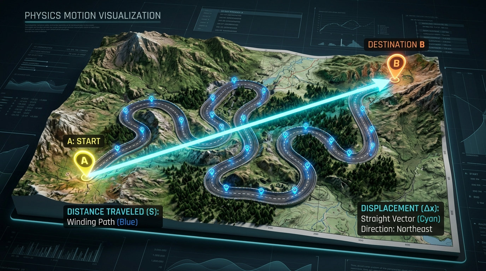
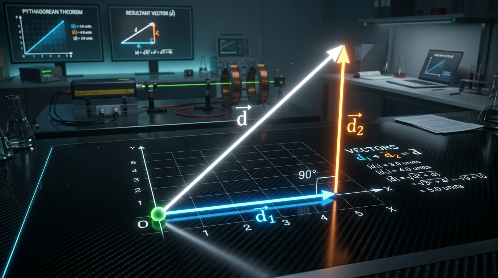

Bài 4: Độ Dịch Chuyển Và Quãng Đường Đi Được

Mô phỏng chuyển động: Quãng đường đi theo quỹ đạo uốn cong và Vectơ độ dịch chuyển mũi tên thẳng
NỘI DUNG BÀI HỌC
1. Chất Điểm Và Cách Xác Định Vị Trí Của Vật
Một vật chuyển động được coi là một chất điểm nếu kích thước của vật rất nhỏ so với chiều dài đường đi hoặc khoảng cách mà ta xét. Để xác định vị trí của một chất điểm trong không gian, ta gắn vật vào một hệ tọa độ thích hợp (trục $Ox$ trên đường thẳng hoặc hệ trục $Oxy$ trên mặt phẳng) kết hợp với một mốc thời gian (đồng hồ).
Vị trí của vật được xác định bởi tọa độ $x$ (khoảng cách từ gốc $O$ đến vật kèm dấu đại số). Nếu vật chuyển động từ tọa độ $x_1$ đến $x_2$, giá trị độ dịch chuyển đại số là: $d = x_2 - x_1$.
Vị trí của vật được xác định bởi cặp tọa độ $(x, y)$ hoặc vectơ vị trí $\vec{r}$. Việc định hướng vị trí thường kết hợp với 4 hướng địa lý: Bắc, Nam, Đông, Tây.
2. Quãng Đường Đi Được Và Vectơ Độ Dịch Chuyển
Khi một vật di chuyển từ điểm đầu $A$ đến điểm cuối $B$, hai đại lượng vật lí mô tả sự di chuyển này có bản chất khác biệt hoàn toàn:
- Quãng đường đi được ($s$): Là đại lượng vô hướng, luôn không âm ($s \ge 0$), cho biết chiều dài toàn bộ quỹ đạo mà vật đã thực sự đi qua trong suốt khoảng thời gian chuyển động.
- Vectơ độ dịch chuyển ($\vec{d}$): Là đại lượng vectơ có gốc đặt tại vị trí ban đầu ($A$), ngọn hướng về vị trí kết thúc ($B$), độ lớn $d = AB$ bằng khoảng cách ngắn nhất giữa điểm đầu và điểm cuối.
Phân biệt Quãng đường đi được $s$ (đường uốn cong) và Vectơ Độ dịch chuyển $\vec{d}$ (mũi tên hướng từ A đến B)
3. Phân Biệt Quãng Đường $s$ Và Độ Dịch Chuyển $d$
Trong thực tế chuyển động, mối quan hệ giữa độ lớn độ dịch chuyển $d$ và quãng đường đi được $s$ luôn tuân theo quy tắc: $d \le s$.
Chuyển động thẳng không đổi chiều:
Khi vật đi thẳng theo một chiều duy nhất, độ lớn độ dịch chuyển bằng đúng quãng đường đi được: $d = s$.
Chuyển động cong hoặc có quay đầu đổi chiều:
Khi vật đi trên đường cong hoặc đổi chiều chuyển động, quãng đường luôn lớn hơn độ lớn độ dịch chuyển: $s > d$.
Chuyển động khép kín (Quay về điểm xuất phát):
Khi điểm cuối trùng với điểm đầu (Ví dụ: đi 1 vòng hồ tròn), độ dịch chuyển bằng $0$ ($d = 0$) trong khi quãng đường $s > 0$.
4. Quy Tắc Tổng Hợp Độ Dịch Chuyển Vectơ
Nếu vật thực hiện liên tiếp độ dịch chuyển $\vec{d}_1$ rồi đến $\vec{d}_2$, độ dịch chuyển tổng hợp $\vec{d}$ được xác định bằng phép cộng vectơ:
Khi $\vec{d}_1 \uparrow\uparrow \vec{d}_2$, độ lớn độ dịch chuyển tổng hợp bằng tổng hai độ lớn thành phần:
Khi $\vec{d}_1 \perp \vec{d}_2$, độ lớn độ dịch chuyển tổng hợp tính theo định lý Pythagoras:

Sơ đồ tổng hợp độ dịch chuyển hai thành phần vuông góc: $d = \sqrt{d_1^2 + d_2^2}$
📌 Bản chất Quãng đường $s$: Đại lượng vô hướng, không âm ($s \ge 0$), đo toàn bộ độ dài đường đi của vật.
📌 Bản chất Độ dịch chuyển $\vec{d}$: Đại lượng vectơ nối từ vị trí đầu $A$ đến vị trí cuối $B$, cho biết hướng và khoảng cách ngắn nhất giữa 2 vị trí.
📌 Mối quan hệ $d$ và $s$: Khi đi thẳng không đổi chiều thì $d = s$; khi đi cong/đổi chiều thì $s > d$; khi quay về điểm đầu thì $d = 0$. Luôn có $d \le s$.
📌 Quy tắc tổng hợp vectơ: $\vec{d} = \vec{d}_1 + \vec{d}_2$. Nếu 2 độ dịch chuyển vuông góc nhau ($\vec{d}_1 \perp \vec{d}_2$) thì $d = \sqrt{d_1^2 + d_2^2}$.